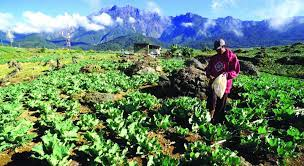

Here in Kundasang, there was a lot of foods and fresh vegetables you can get with a reasonable price beside get a free scenery of Mount Kinabalu.

The most popular foods here in Kundasang is more to a fresh vegies and fruits that is the strawberries and cabbage. The weather here in Kundasang was so good until you can feel like you are in South Korea.


Kundasang also popular with the people who mostly is a farmer and that is why we can buy a fresh vegetables there. In an article from The Malaysian Reserve The farmer in Kundasang still can survive life because the demand of vegetables was increasing time by time.

Kundasang mostly populated with Dusun, Chinese and some Indian people especially in Ranau. The traditions and cultures here are similar with other Dusun people here in Sabah.


These are the videos of the song about Mount Kinabalu and the must visited place to go in Kundasang